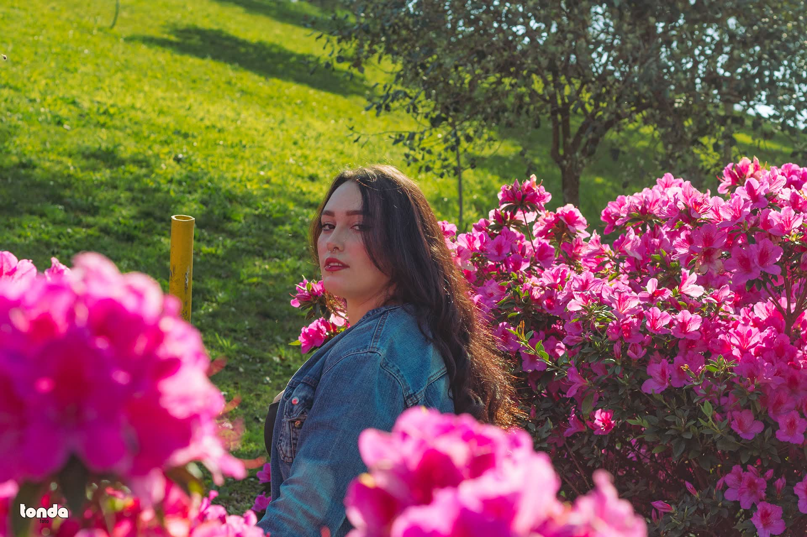
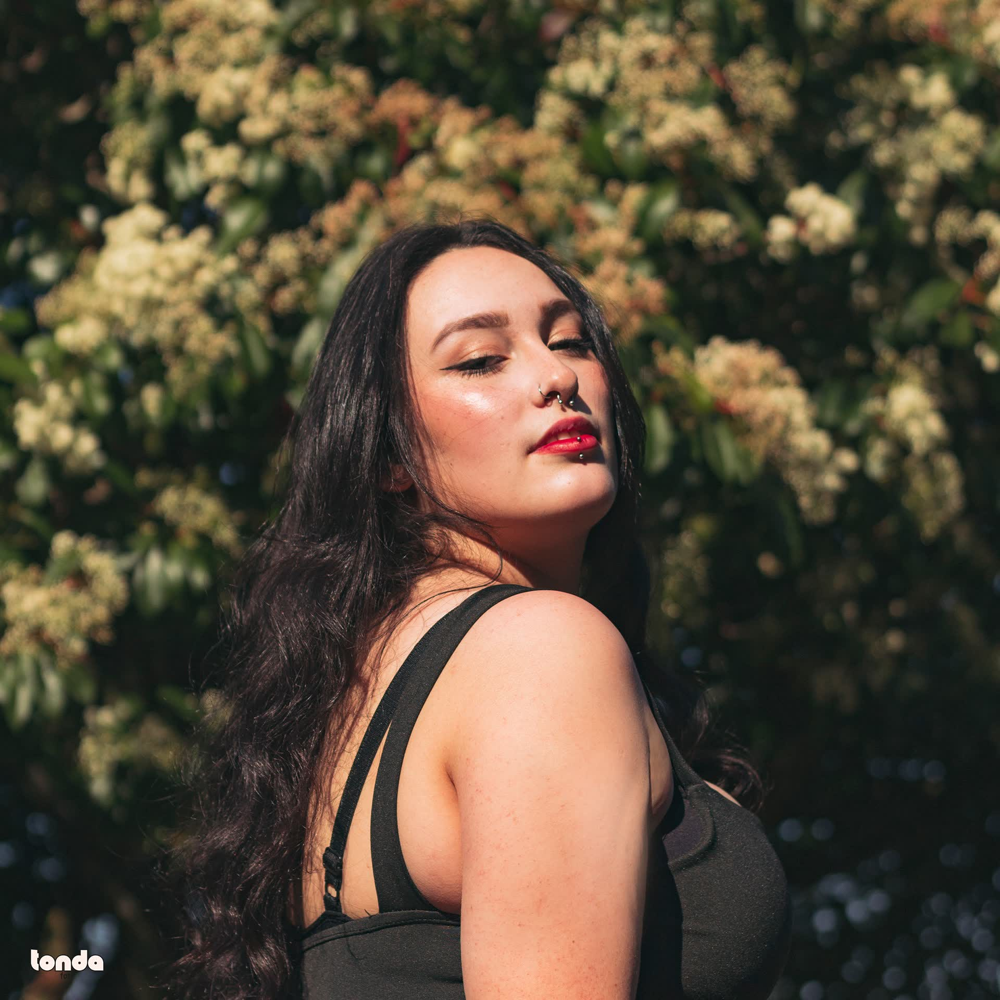
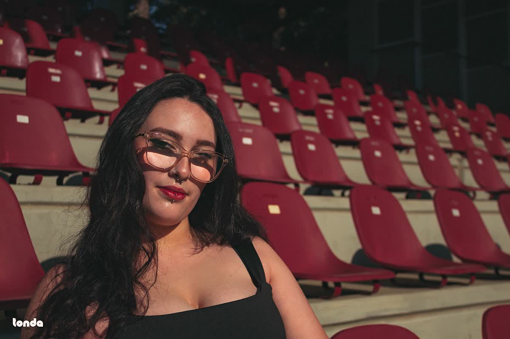
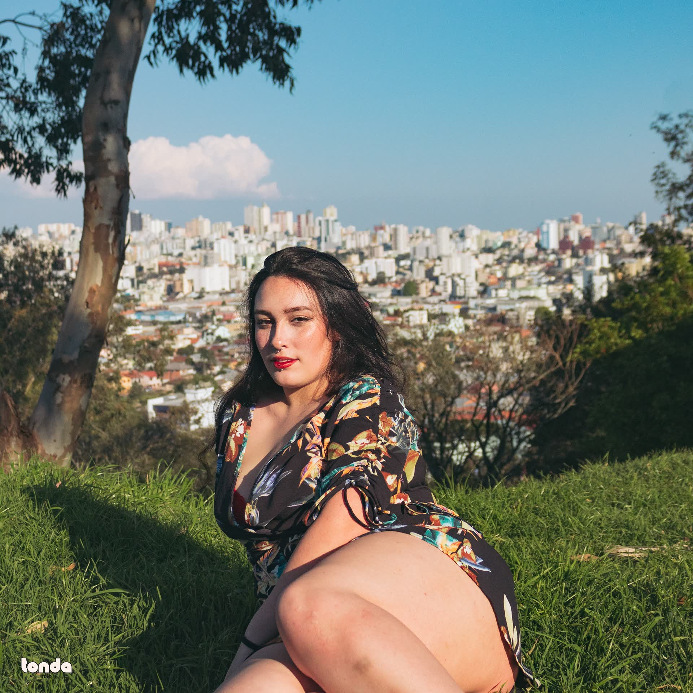
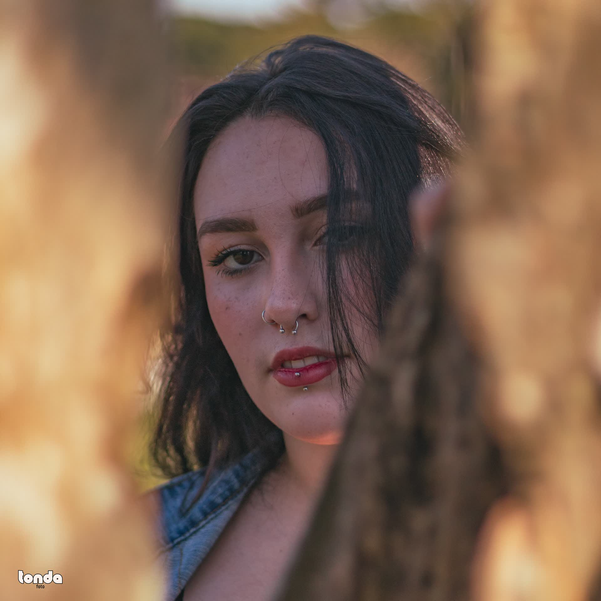

Carol

La ciudad como escenario
Un ensayo femenino por la ciudad: las gradas de un estadio, un mirador sobre los edificios y un jardín de azaleas. La luz del final de la tarde y el color saturado construyen un retrato con actitud.






Créditos
Cliente
Carol
Año
2022
Mi rol
Dirección de arte · Fotografía